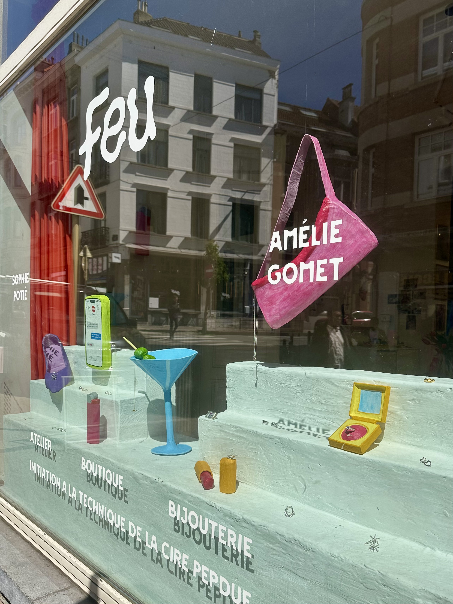
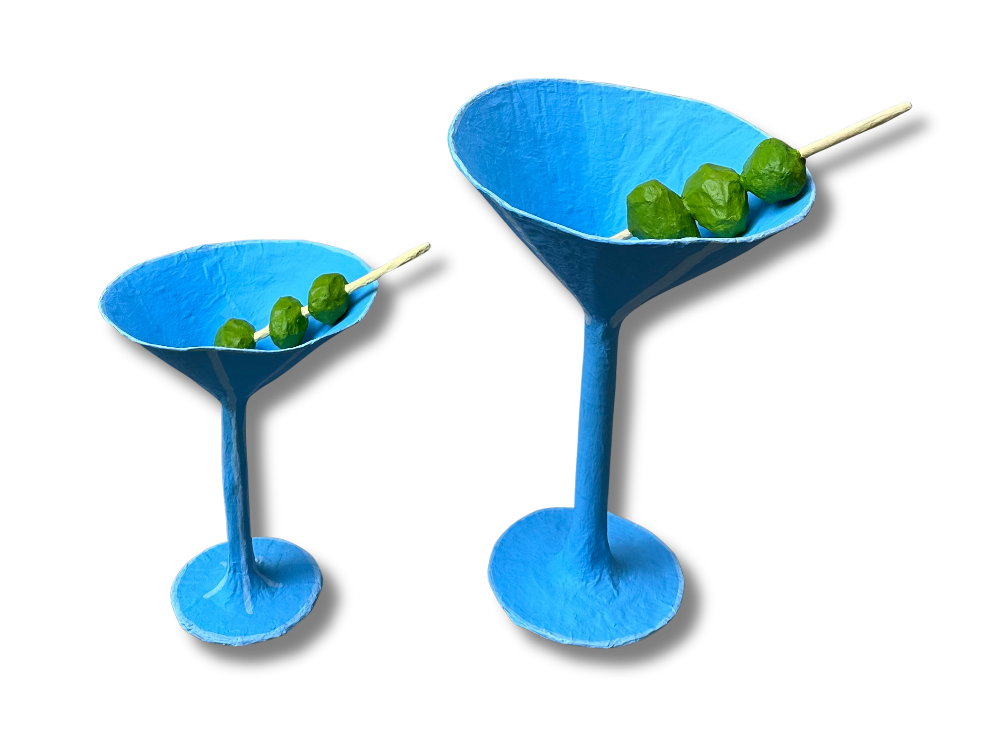
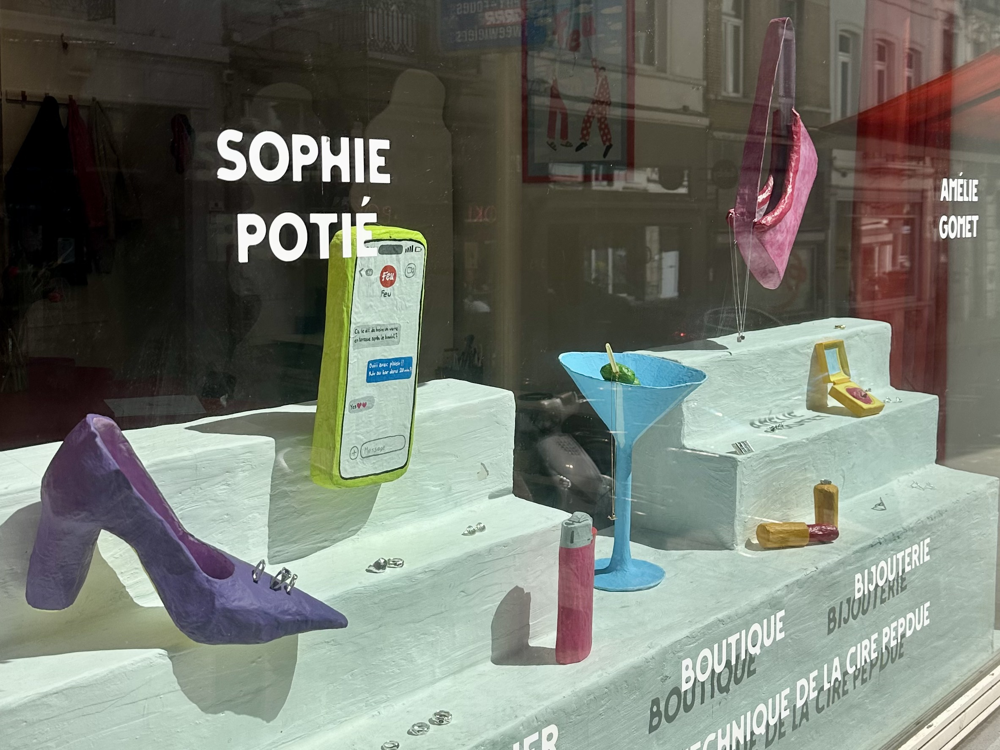
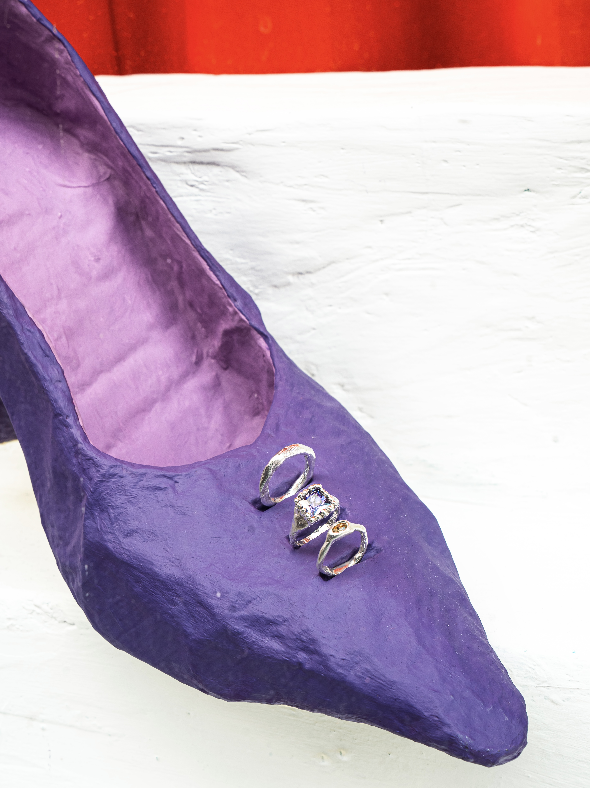
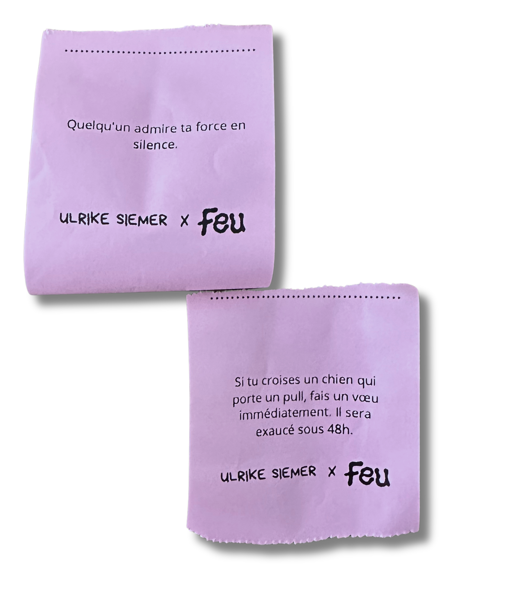
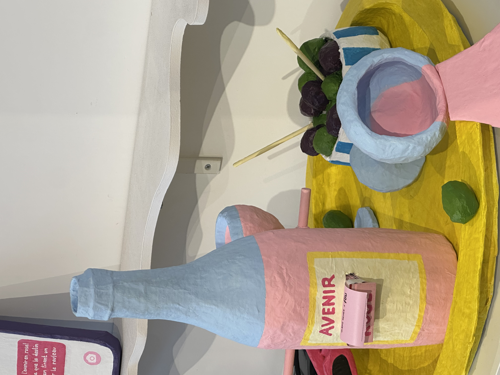

Just in time for the arrival of spring, this sculptural window display brings together a collection of papier-mâché sculptures inspired by the small pleasures of the season: drinks on a terrace with friends, slow walks in the sunshine, and the joy of wearing a beautiful piece of jewellery. Inside, the installation continues with a series of interactive sculptures inviting visitors to pick a fortune and discover a little message about what the future might hold.





